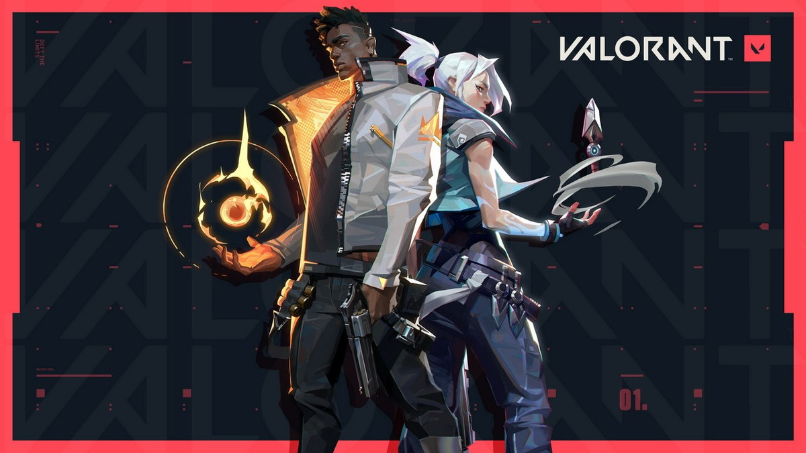
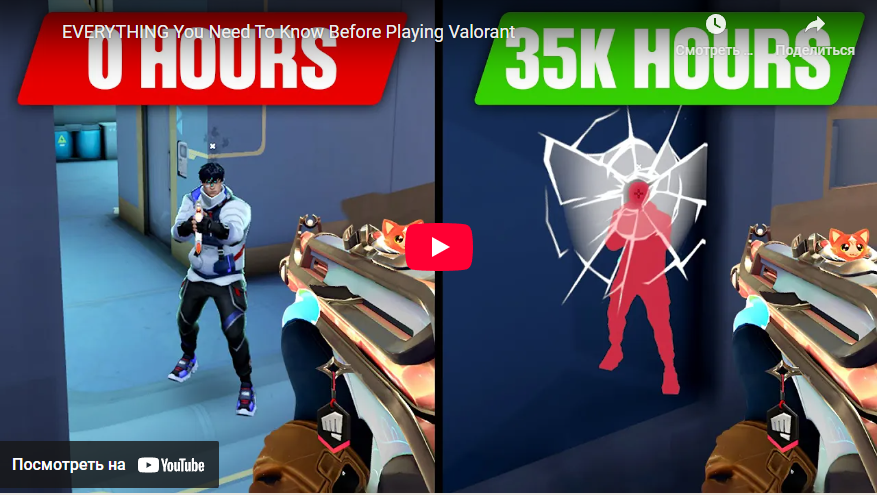
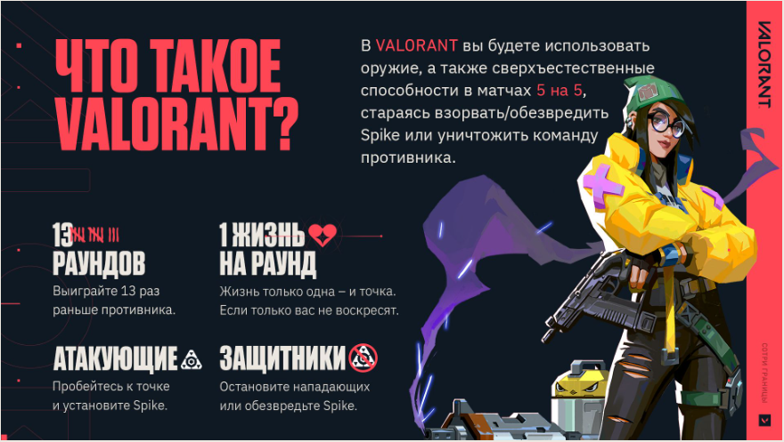
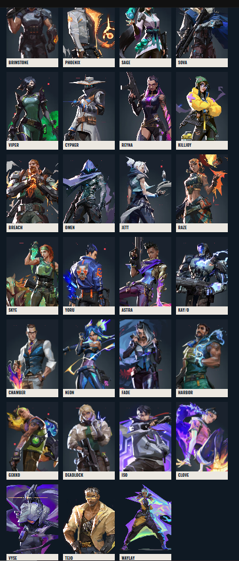
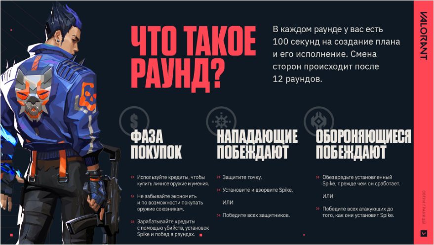
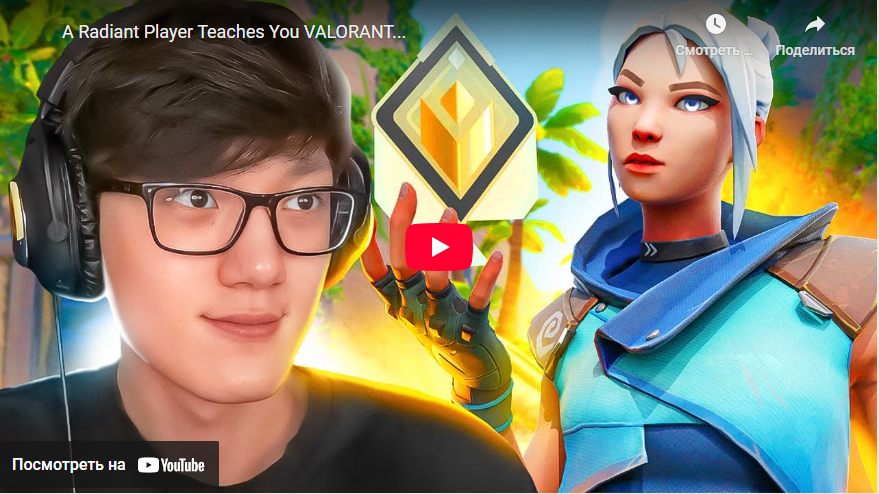

В конецПредставляем вашему вниманию Руководство для новичков VALORANT! Вы играете впервые? Или хотите освежить свои знания? Мы готовы рассказать все, что вам нужно знать, чтобы чувствовать себя в игре уверенно. Также на этой странице вы найдете различные видеоинструкции, подготовленные для вас самыми популярными и авторитетными игроками из сообщества VALORANT. Местами они довольно безумные, так что их точно стоит посмотреть.
Хотите краткое содержание? В следующем видео от Tarik есть отличный обзор базовых вещей, которые стоит усвоить еще до начала своего первого матча.


Перед началом первого раунда вас ждет выбор агента. Сейчас можно выбрать любого из 27 агентов. Все они распределены по четырем разным ролям, в зависимости от их возможностей. Если вы играете с новой учетной записи, то вы заметите, что открыты не все агенты. Однако чем больше вы будете играть, тем быстрее у вас получится открыть всех!

У каждого из агентов есть свой уникальный набор навыков. Грамотное взаимодействие между агентами приведет вас к победе. Хотя присутствие представителя каждой из ролей в пятерке не является обязательным, вы поймете, что ваши шансы на успех выше, если в вашей команде собраны разнообразные агенты, у каждого из которых свои функции. Например, вам будет проще пробиться к точке, если у вас есть специалист, который с помощью дыма заблокирует обзор противнику!
После того как каждый выберет своего агента, вы переместитесь на случайную карту и начнете первый раунд.
Раунд вы начнете либо за атакующих, либо за защитников. После 12 раундов происходит смена сторон. Перед фактическим началом каждого из раундов у вас будет отрезок времени, в течение которого вы сможете подготовиться, купив предметы и навыки. Решение о покупке нужно принимать исходя из выбора агента и его игрового стиля. Также стоит учитывать количество имеющихся кредитов. Хотите приобрести навык, который лечит вашу команду? Или хотите оружие помощнее, чтобы уложить врагов?

DВ зависимости от того, атакующий вы или защитник, вам предстоит либо устанавливать Spike и ждать, пока он сработает, либо обезвреживать Spike после того, как его установят противники. В любом случае, если уничтожить врагов, задача станет куда легче.
Если нужны подробности, то вот вам видео от iiTzTimmy, в котором рассказывается, как можно распределять кредиты по раундам в зависимости от стороны в бою [0:27].

| Оружие | Цена |
| Classic | |
| Shorty | 300 |
| Frenzy | 450 |
| Ghost | 500 |
| Sherif | 800 |
| Stinger | 1100 |
| Spectre | 1600 |
| Bucky | 850 |
| Judge | 1850 |
| Bulldog | 2050 |
| Guardian | 2250 |
| Phantom | 2900 |
| Vandal | 2900 |
| Marshal | 950 |
| Operator | 4700 |
| Outlaw | 2400 |
| Ares | 1600 |
| Odin | 3200 |